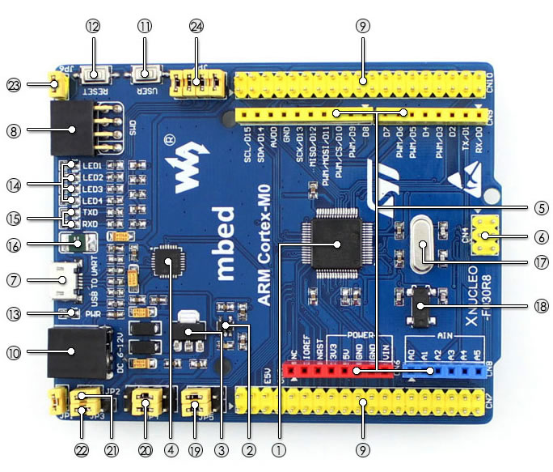

XNUCLEO-F030R8 STM32开发板 立即购买
兼容NUCLEO-F030R8的开发板，基STM32F030R8T6。如果你了解NUCLEO，就知道我支持mbed开发平，还打通了Arduino生态圈。另外，我其实是NUCLEO的进化版，号称XNUCLEO，就像XMEN一样，有特异功能。
- 市场价: ¥258
- 每人免费提供: 1个
- 已申请: 106人
初识xnucleo－f030r8
自我介绍
我是块兼容nucleo-r030r8的开发版，基于stm32f030r8t6。
如果你了解nucleo，就知道我支持mbed开发平台，还打通了Arduino生态圈。
另外，我其实是nucleo的进化版，号称xnucleo，就像xmen一样，又特异功能。
我的特点
● 兼容nucleo-r030r8，基于cortex-M3 STM32F030R8T6
● 兼容Arduino，支持各种Arduino扩展版，接入Arduino庞大生态系统，获得更多潜在的资源
● 提供ST Morpho扩展排针，弥补Arduino I/O接口较少的缺陷，方便自由连接周边设备
● 支持mbed，支持mbed SDK及在线工具快速搭建产品原型，缩短开发周期
● 配合mbed在线资源，即可参考不断更新的丰富的STM32综合库软件HAL以及各种封装好的例程。
图解xnucleo－f030r8

［芯片简介］
1.STM32F030R8T6
内核：ARM®32-bit CortexTM-M0
工作频率：48MHz
工作电压：2.4V-2.6V
封装：LQFP64
存储资源：64kB Flash,8kB SRAM
接口资源：2 x SPI，2 x USART，2 x 12C
模数转换：1 x AD(12位，16通道)
2.SPX3819M5
3.3V稳压器件
3.AMS1117-5.0
5.0V稳压器件
CP2102
USB转串口芯片
［接口简介］
暂无评论！